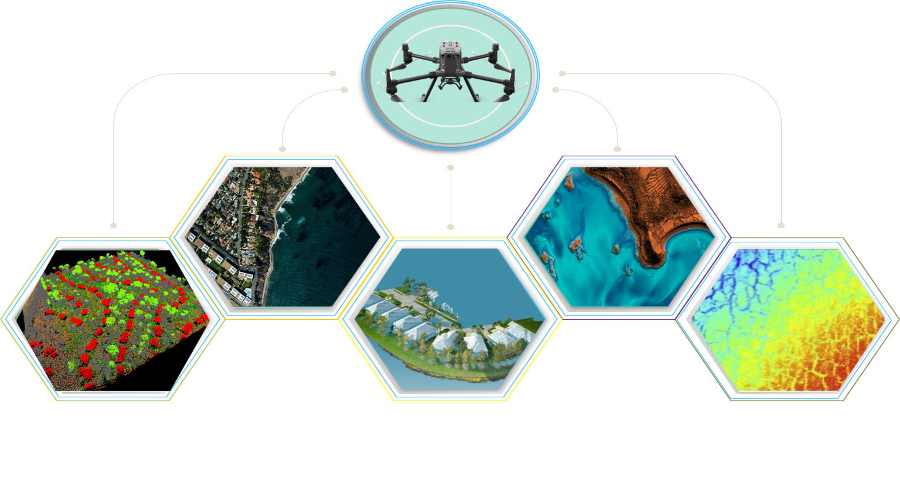

ABOUT
Maharashtra is the second most populous and third largest state of India. It spread over
307713 Sq. Km and situated over west coast of India. Maharashtra occupies the western and
central part of the country and as per statistical data available, Maharashtra has a long
coastline stretching 720 kilometers along the Arabian Sea, which is divided, among 6
Districts as under: Out of this 720 Kms coastal length 400 Kms length is naturally protected, &
About 320 Kms length is vulnerable to erosion. Out of this, protection for 145 Kms has been
protected by artificial means such as Construction of Anti Sea Erosion Bund, Sea Wall, and each
Nourishment inform of Geotubes etc. The remaining length is yet to be protected.
Out of this 720 Kms coastal length 400 Kms length is
naturally protected, & About 320 Kms length is vulnerable to erosion. Out of this, protection
for 145 Kms has been protected by artificial means such as Construction of Anti Sea Erosion
Bund, Sea Wall, and each Nourishment inform of Geotubes etc. The remaining length is yet to be
protected.
For Development Of setback planning, hazard zoning, erosion – accretion studies, regional
sediment budgets, modeling of coastal morph dynamics,
survey of coastline with latest technology is required for preparing Coastal Management Plan for
erosion control measures to ensure effective protection of shore lines, coastal infrastructure,
livelihoods and lives.
IN Maharashtra Integrated Coastal Zone Management Is One Of The Tools To Achieve This Goal.
Coastal Zones Involve Many Different Elements Of Development And Interaction And These Elements
Change Due To Natural Or Human Factors.
Temporal Change In Coastal Zones Is Reflected On The Coast Line. Coast Line Advance And Retreat
Cause Major Changes On Coastal Zones.
TECHNOLOGY
IN Maharashtra Integrated Coastal Zone Management Is One Of The Tools To Achieve This Goal. Coastal Zones Involve Many Different Elements Of Development And Interaction And These Elements Change Due To Natural Or Human Factors. Temporal Change In Coastal Zones Is Reflected On The Coast Line. Coast Line Advance And Retreat Cause Major Changes On Coastal Zones. One Of The Most Basic Elements Of Integrated Coastal Zone Management Is The Accurate Determination Of Coastal Line. For This Purpose, Tools Such As Remote Sensing, Photogrammetry, Bathometry , GPS Technology And Lidar Systems, Which Have Been Actively Used In Recent Years, Are Used. The Use Of Lidar Technology In Order To Examine Coastline Changes Was Investigated.
1.LIDAR TECHNOLOGY
Airborne light detection and ranging (lidar) is a remote sensing technology that is proving increasingly beneficial in a variety of ocean and coastal mapping applications. Lidar systems use pulsed lasers in aircraft to measure ranges to the surface below. The range measurements are combined with position and orientation data to obtain accurate, 3D spatial coordinates (e.g., latitudes, longitudes, and heights) of points on Earth’s surface, as well as elevated features, such as canopy and buildings. In the case of bathymetric lidar, green laser beams are employed for ranging through the water column in order to map bathymetry of shallow coastal waters
Lidar surveys are being used to assess the vulnerability of natural resources. Lidar resolution (approximately 1 m × 1 m) allows a broad range of seabed features to be distinguished at many different spatial scales, such as sand waves, island topography, and reefs capes. The high resolution is achieved rapidly over large distances (when there is sufficient water clarity), leading to efficient and effective resource characterization, particularly in relatively shallow and complex coastal areas, such as reefs and wetlands.
Output By Lidar:

2.BATHYMETRY TECHNOLOGY
Bathymetry is the study and mapping of the seabed or lakebed. It consists of obtaining measurements of the depth of the ocean or lakes and is equivalent to the mapping of the earth's topography. In general, only limited information is known about seabed and lake beds. Existing maps of the seabed are often low-resolution or obsolete. In this application, Apache is suitable technology as it can measure depths of up to 300 m and provide its exact GNSS position. The data can be used to estimate silt deposits that scour the channel bottom, etc.
The seabed level must be accurately measured to determine whether a vessel can make it to the berthing area or whether dredging is required to create adequate depth. The depth level is required in dam and reservoir areas to calculate the capacity of the dam year after year. Due to the constant movement of water through these dams, siltation causes the bed level to rise, which reduces their overall capacity.
Output By Bathymetry:


PROJECT BRIEF
A. Drone lidar technology is play an important role in inaccessible coastal areas.
B. In places like forests and hills where the trees are dense, normal mapping equipment can have
a difficult time determining elevation, but not lidar. You can use it in even a
densely covered area to collect elevation information.
Lidar Is An Optical Remote-sensing Technology That Can Measure The Distance To, Or Other
Properties Of, Targets By Illuminating The Target With Laser Light And Analyzing The
Backscattered Light.
A LiDAR system uses a laser, a GPS and an IMU to estimate the heights of objects on the ground.
Discrete LiDAR data are generated from waveforms -- each point represents peak energy points
along the returned energy. Discrete LiDAR points contain an X, Y and Z value.
LIDAR point cloud data is a collection of points that describe a surface or an object. Each
point is described with x, y, and z coordinates and in some cases is associated with additional
attributes such as a classification of the point. LIDAR data is used to extract accurate
geo-referenced vector features such as buildings, roads, and trees.
Georeferencing means that the internal coordinate system of a digital map or aerial photo can be
related to a ground system of geographic coordinates. A georeferenced digital map or image has
been tied to a known Earth coordinate system, so users can determine where every point on the
map or aerial photo is located on the Earth's surface.
allows the integration of spatial data from different sources. It allows for the use of data for
a variety of purposes such as analysis, planning, decision making and documenting among others.
Georeferencing also makes it possible to have standardization in the spatial data by allowing it
to be compatible to any software used in GIS without causing difficulties.
Georeferencing also enables the geographic information system to easily incorporate data from
different sources including satellite images and maps into a single database.
The coastline paradox of a landmass has no defined length. Depending on the scale used, the
coastline may be larger or smaller.
Rectification of coastline concerning the drone image. The red line marked on google earth the
line does not match the drone image. The coastline can rectify with respect to the drone image.